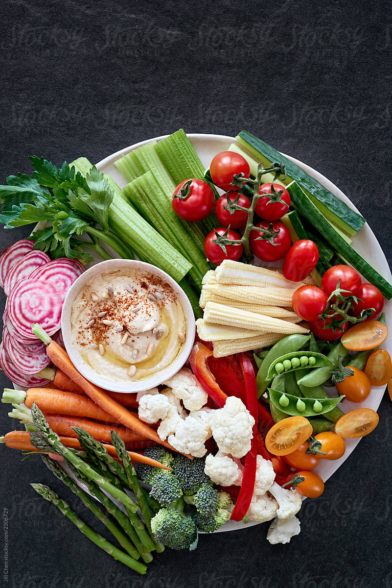

Veggies and hummus
Homemade hummus is just better.
Ingredients
- 3/4 cup dried chickpeas
- 1/3 cup fresh lemon juice
- 3 tablespoons tahini
- 2 garlic cloves, finely minced
- 1/2 teaspoon ground cumin
- Salt to taste
- 1 tablespoon olive oil
- 1 tablespoon finely chopped parsley
- Sprinkling of hot or sweet paprika
- Raw veggies of your choice, cleaned and cut into sticks. Try carrots, cucumbers, zucchini, celery, bell peppers, or cauliflower or broccoli cut into florets.
Instructions
- Rinse and soak the chickpeas in water overnight.
- Drain and place in a pan and cover with water by two inches. Bring to a boil and simmer until very tender, about 1 1/2 hours.
- Drain, reserving the cooking liquid.
- Transfer to a blender and add the lemon juice, tahini, garlic, cumin, and salt.
- Puree until smooth, adding 2 to 3 tablespoons of the cooking liquid as needed to obtain a soft, creamy consistency.
- Transfer to a shallow serving bowl and garnish with olive oil, parsley, and paprika.
- Serve with prepared veggies.